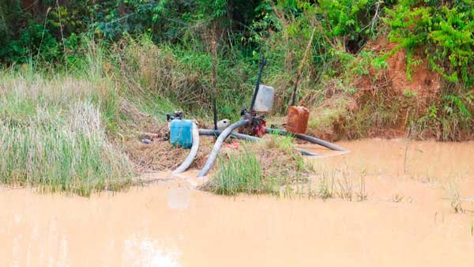
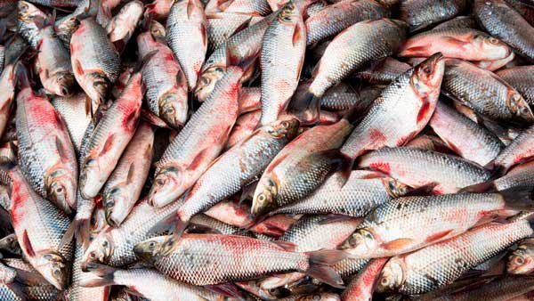
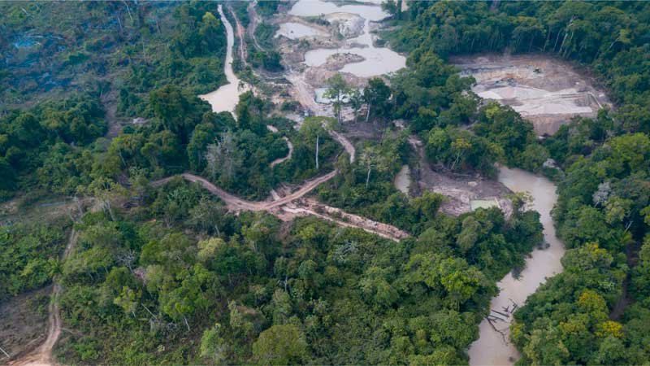
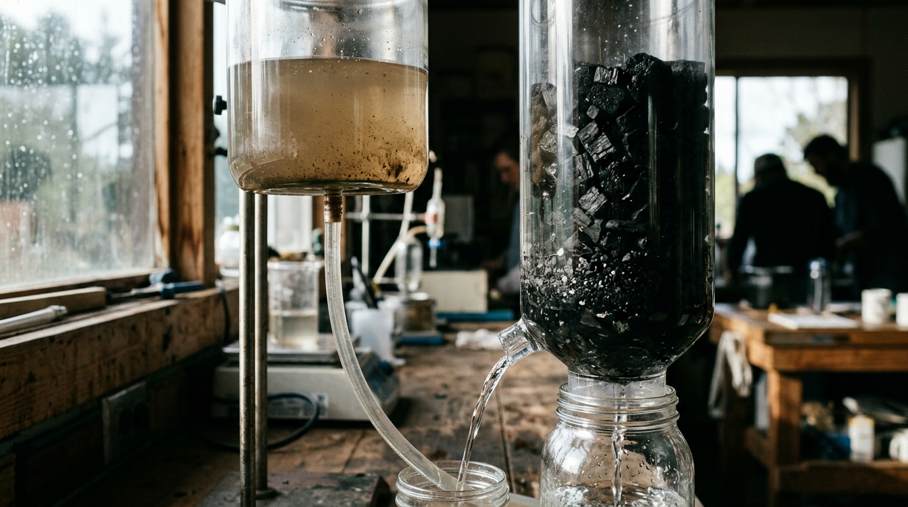

Un análisis de los desafíos ecológicos en el corazón del Chocó y la urgencia de adoptar prácticas sostenibles de remediación.
En el corazón del Pacífico colombiano, el Río Atrato emerge como un símbolo de biodiversidad y riqueza natural. Sin embargo, esta región enfrenta desafíos ambientales sin precedentes, principalmente debido a la minería de oro con mercurio.
La minería de oro ha sido un motor económico histórico, pero su costo ambiental es incalculable. La contaminación desenfrenada con metales pesados como mercurio, plomo, cadmio y arsénico está afectando severamente la calidad del agua, el aire y el suelo en la cuenca, poniendo en riesgo crítico la salud de sus habitantes y la biodiversidad de una de las áreas más ricas del mundo.

Estudios recientes realizados por la Universidad de Córdoba y la Universidad Tecnológica del Chocó (UTCH) revelan niveles alarmantes de metales pesados en peces, frutas y verduras, superando con creces los límites establecidos por organizaciones internacionales.
La investigación se centró en cuatro áreas cruciales: Medio Atrato, Bojayá, Murindó y Vigía del Fuerte. Los resultados son especialmente preocupantes en cuanto a los niveles de mercurio hallados en especies de peces carnívoros, los cuales constituyen la principal fuente de proteína para las comunidades locales.


La minería con amalgama de mercurio ha convertido al Río Atrato en uno de los ríos más contaminados de Colombia, lo que resalta la magnitud del problema ambiental y su repercusión directa en la salud pública.
En un giro histórico y esperanzador, la Corte Constitucional de Colombia reconoció en 2016 la personalidad jurídica del Río Atrato, otorgándole derechos de protección, conservation, mantenimiento y restauración. Este precedente legal no solo es un avance significativo en la protección ambiental en Colombia, sino también un modelo inspirador para la conservación de ecosistemas en todo el mundo.
La situación del Río Atrato es un llamado urgente a la acción. Es imperativo que se adopten medidas sostenibles y se refuercen las políticas de conservación para proteger esta región única. La preservación del Río Atrato no es solo una responsabilidad local; es un mandato global para asegurar el futuro de nuestra biodiversidad y el bienestar de las generaciones venideras.

El Río Atrato
En AguaPura Colombia, estamos redefiniendo el futuro del medio ambiente. Nuestro compromiso con la remediación sostenible es firme, y tú puedes ser parte de este cambio.
Solicitar Información